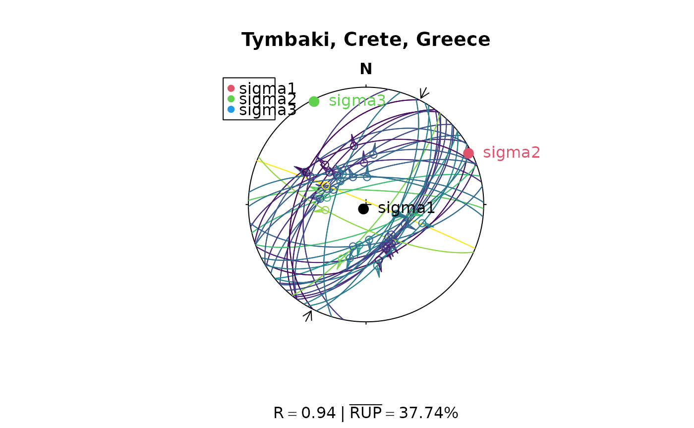
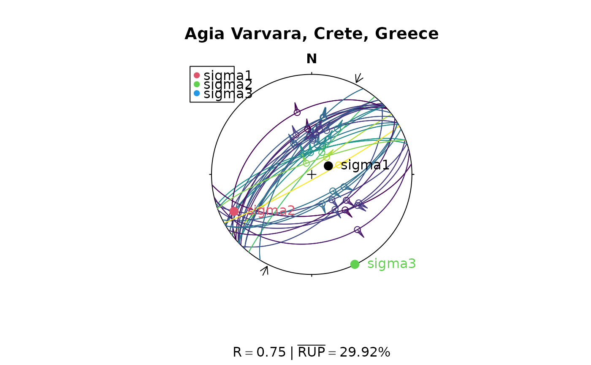

Stress Inversion for Fault-Slip Data after Angelier (1990)
Source:R/stress_inversion.R
slip_inversion_angelier.RdIterative direct inversion after the algorithm of Angelier (1990) and Mostafa (2005)
Arguments
- x
"Fault"object where the rows are the observations, and the columns the coordinates.- max_iter
integer. maximum Mostafa iteration count (default
50)- tol
numeric. convergence tolerance on max absolute change in TR elements between iterations (default
1e-6)- n_psi
integer. number of psi grid points for each step (default
361)- friction
numeric. Coefficient of friction (0.6 by default)
Value
a named list
stress_tensormatrix. Best-fit devitoric stress tensor in input coordinate frame
principal_axes"Line"objects. Orientation of the principal stress axes as unit vectors (max to min)tensor_paramsthe four tensor parameters (Eq. 4.87)
principal_valseigenvalues of the stress tensor (sigma1 >= sigma2 >= sigma3)
Rnumeric. Stress shape ratio after Gephart & Forsyth (1984): \(R = (\sigma_1 - \sigma_2)/(\sigma_1 - \sigma_3)\). Values ranging from 0 to 1, with 0 being \(\sigma_1 = \sigma_2\) and 1 being \(\sigma_2 = \sigma_3\).
phinumeric. Stress shape ratio after Angelier (1979): \(\Phi = (\sigma_2 - \sigma_3)/(\sigma_1 - \sigma_3)\). Values range between 0 (\(\sigma_2 = \sigma_3\)) and 1 (\(\sigma_2 = \sigma_1\)).
bottnumeric. Stress shape ratio after Bott (1959): \(\R = (\sigma_3 - \sigma_1)/(\sigma_2 - \sigma_1)\). Values range between \(-\infty\) and \(+\infty\).
alphanumeric. The mean misfit angle in degrees.
mean_rupmean RUP across all faults
quality_summarycounts per quality class
SHmaxnumeric. Direction of maximum horizontal stress (in degrees)
betanumeric. Average angle between the tangential traction predicted by the best stress tensor and the slip vector on each plane. Should be close to 0.
sigma_snumeric. Average resolved shear stress on each plane. Should be close to 1.
fault_datadata.framecontaining thealphaangles,betaangles, i.e. the angles between sigma 1 and the plane normal, the resolved shear and normal stresses, the slip and dilation tendency on each plane, and the per-fault "ratio upsilon parameter" (RUP) estimator in percent, and the RUP-based quality.n_iternumber of Mostafa iterations performed
Details
The reduced stress tensor (Eq. 4.87) is parameterised as: $$T_R = \begin{bmatrix} \cos(\psi) & d & e \\ d & \cos(\psi+2\pi/3) & f \\ e & f & \cos(\psi + 4\pi/3) \end{bmatrix} $$ with two normalisation constraints (Pascal, 2022; Eqs 4.88–4.89):
\(T_{11} + T_{22} + T_{33} = 0\) (deviator)
\(T_{11}^2 + T_{22}^2 + T_{33}^2 = 3/2\) (fixes \(\lambda = \sqrt(3)/2\))
The four unknowns are \(\psi\), \(d\), \(e\), \(f\).
Minimisation function (Eq. 4.101): \(F_4 = \sum_i \upsilon_i^2\), where \(\upsilon_i = \lambda * \hat{s}_i - \tau_i\)
\(dF_4/d(d,e,f)\) = 0 yields a 3x3 linear system in (\(d\),\(e\),\(f\)) given \(\psi\). \(dF_4/d\psi = 0\) is nonlinear; solved here by grid search + Brent refinement.
Mostafa (2005) replaces the global \(\lambda\) with per-fault \(\lambda_i\) equal to the shear traction magnitude on each plane and iterates until convergence.
References
Angelier, J. (1990). Inversion of field data in fault tectonics to obtain the regional stress—III. A new rapid direct inversion method by analytical means. Geophys. J. Int, 103, 363–376. https://doi.org/10.1111/j.1365-246X.1990.tb01777.x
Pascal, C. (2022). Paleostress Inversion Techniques. Chapter 4, Sections 4.2.3 and 4.2.4.
Mostafa, M. E. (2005). Iterative direct inversion: An exact complementary solution for inverting fault-slip data to obtain palaeostresses. Computers & Geosciences, 31(8), 1059–1070. https://doi.org/10.1016/j.cageo.2005.02.012
See also
Other stress-inversion:
Fault_PT(),
slip_inversion(),
slip_inversion_michael(),
slip_inversion_simple()
Examples
# Use Angelier examples:
res_TYM <- slip_inversion_angelier(angelier1990$TYM)
R_val <- round(res_TYM$R, 2)
rup_val <- round(res_TYM$mean_rup, 2)
# Plot the faults (color-coded by RUO%) and show the principal stress axes
stereoplot(title = "Tymbaki, Crete, Greece", guides = FALSE)
stereo_shmax(res_TYM$SHmax)
fault_plot(angelier1990$TYM, col = assign_col(res_TYM$fault_data$rup))
points(res_TYM$principal_axes, col = 1:3, pch = 16, cex = 1.5)
text(res_TYM$principal_axes, label = rownames(res_TYM$principal_axes),
col = 1:3, adj = -.25)
legend("topleft", col = 2:4, legend = rownames(res_TYM$principal_axes), pch = 16)
title(sub = bquote(R == .(R_val) ~ "|" ~ bar("RUP") == .(rup_val) * '%'))

res_AVB <- slip_inversion_angelier(angelier1990$AVB)
R_val <- round(res_AVB$R, 2)
rup_val <- round(res_AVB$mean_rup, 2)
stereoplot(title = "Agia Varvara, Crete, Greece", guides = FALSE)
stereo_shmax(res_AVB$SHmax)
fault_plot(angelier1990$AVB, col = assign_col(res_AVB$fault_data$rup))
points(res_AVB$principal_axes, col = 1:3, pch = 16, cex = 1.5)
text(res_AVB$principal_axes, label = rownames(res_AVB$principal_axes),
col = 1:3, adj = -.25)
legend("topleft", col = 2:4, legend = rownames(res_AVB$principal_axes), pch = 16)
title(sub = bquote(R == .(R_val) ~ "|" ~ bar("RUP") == .(rup_val) * '%'))
